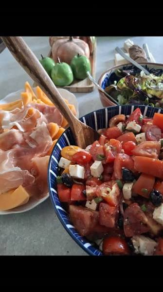

CityLoop Quest — Tropéa


Le matin commence souvent au bar, debout au comptoir, avec un espresso et une pâtisserie. Le café est rapide, mais la conversation peut durer. Commander, saluer et observer le va-et-vient fait partie de l’expérience autant que la boisson.
Les étals et petites épiceries exposent les oignons rouges en tresses, les piments, l’huile, les conserves et les fromages. Les produits destinés aux visiteurs côtoient les achats ordinaires des habitants. Demander l’origine ou la saison permet de distinguer une spécialité locale d’un simple souvenir emballé.
Le déjeuner reste un moment important, surtout le dimanche. Antipasti, pâtes puis viande ou poisson peuvent se succéder sans urgence. Les portions sont généreuses, mais il n’est pas nécessaire de commander toutes les étapes du repas pour respecter la tradition.
À l’heure de l’aperitivo, les terrasses du centre se remplissent. Une boisson s’accompagne souvent de petites bouchées, mais l’ambiance compte davantage que la quantité. Plus tard, la passeggiata mène presque inévitablement vers une gelateria.
Une bonne règle consiste à alterner les adresses très visibles avec les établissements fréquentés par les habitants à quelques rues du Corso. Les menus courts et saisonniers sont souvent un signe encourageant. Et lorsqu’un serveur demande si le piment convient, mieux vaut répondre honnêtement : il connaît sa région.